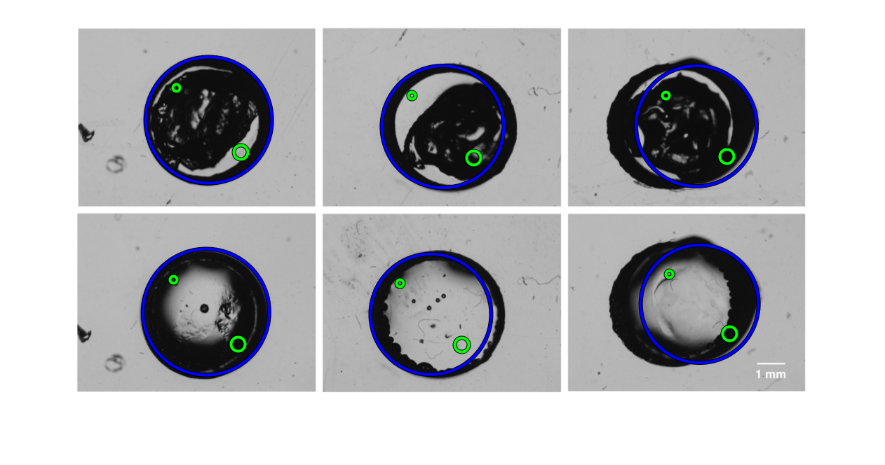
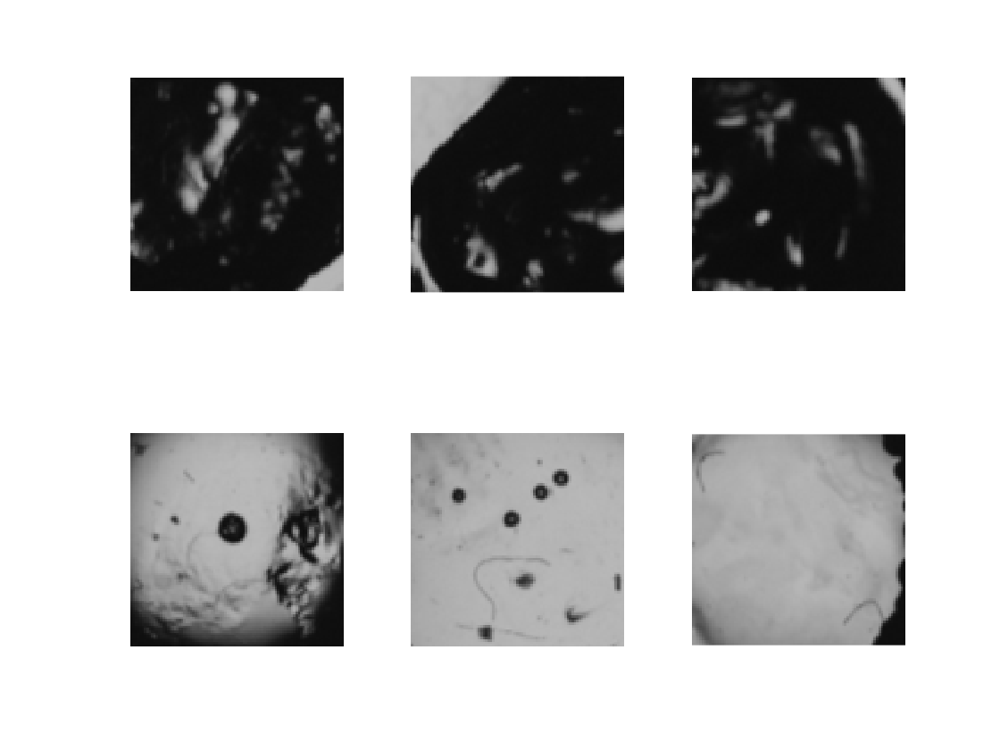
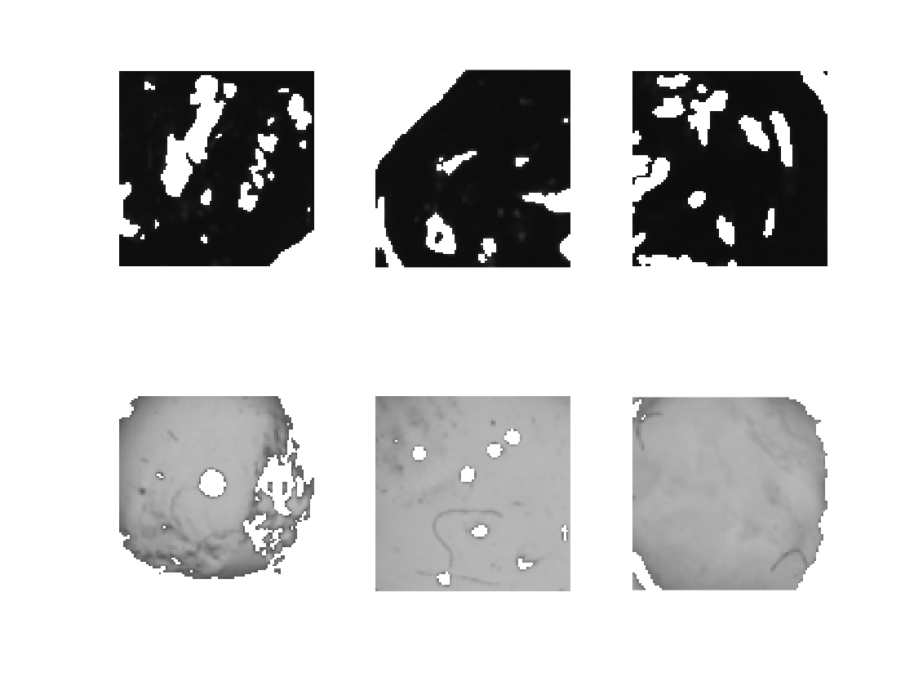
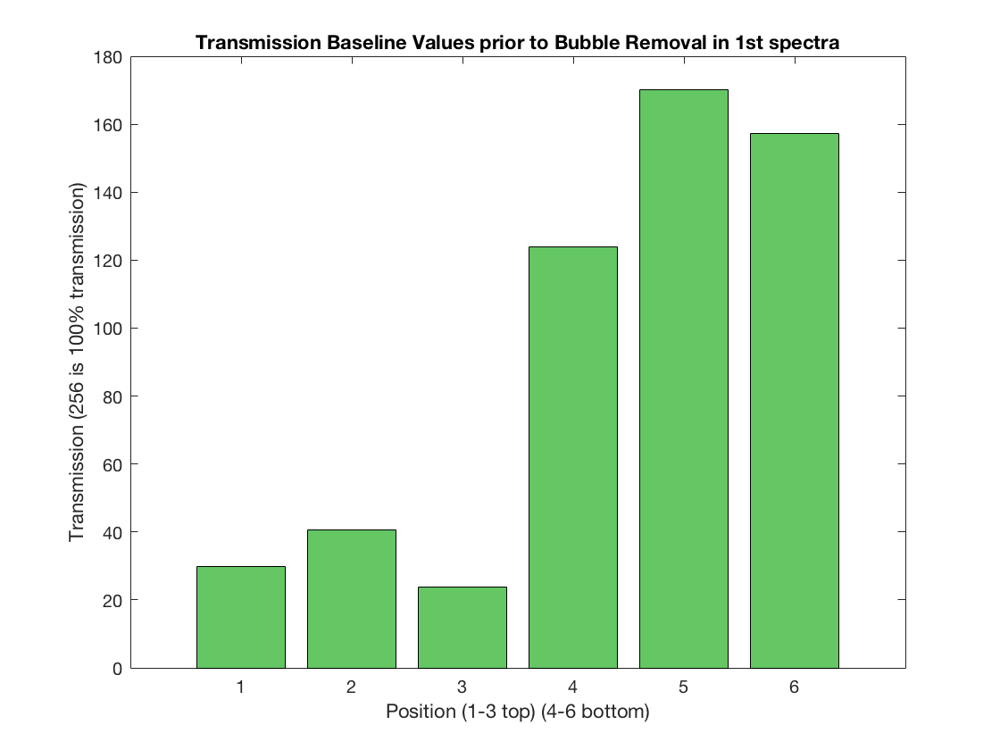
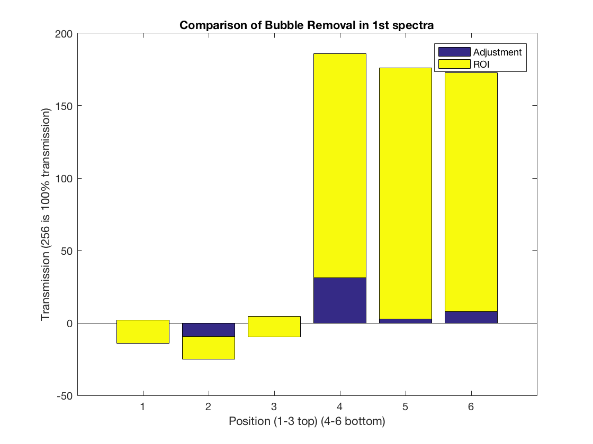
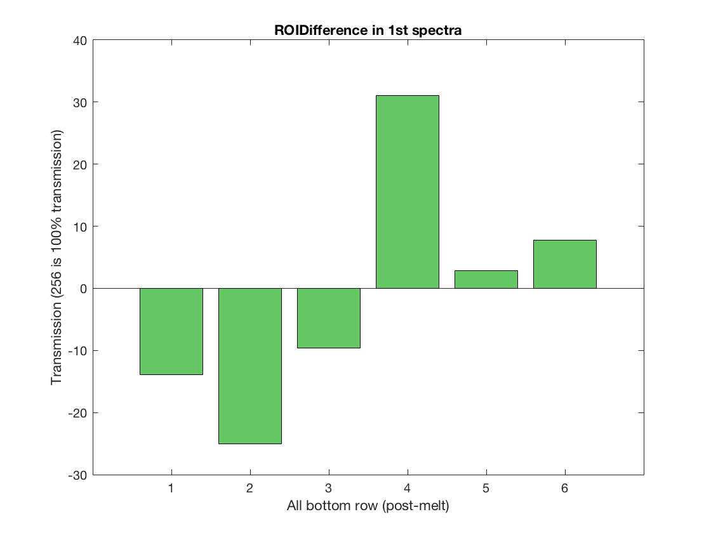
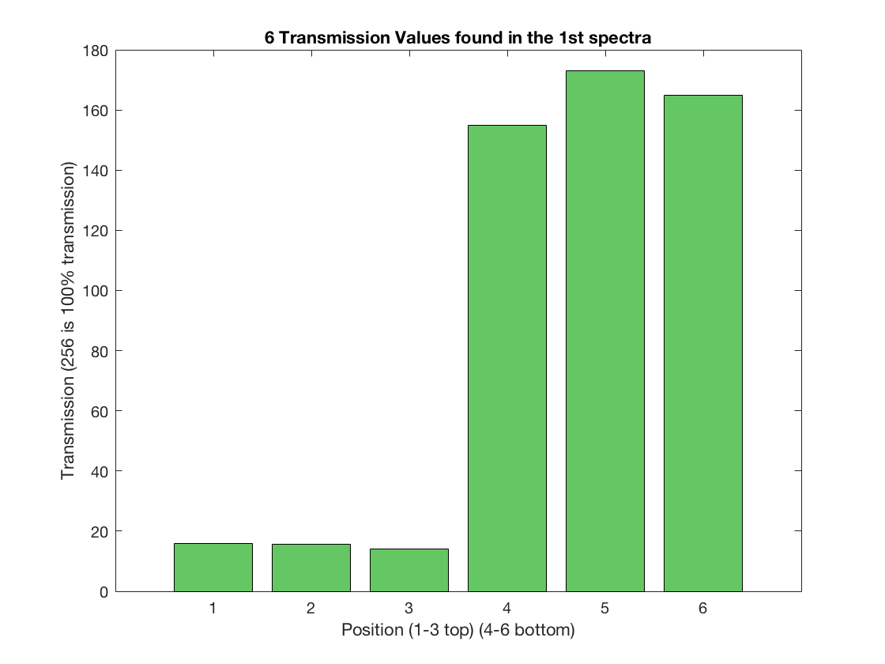

%%%%%%%%%%%%%%%%%%%%%%%%%% % % Demo of ROI from Matlab: http://www.mathworks.com/help/images/apply-filter-to-region-of-interest-in-an-image.html % clc, clear all, close all % Boilerplate % img = imread('pout.png'); % % img = img(:,:,1); % img = rgb2gray(img); % figure % h_img = imshow(img); % e = imellipse(gca,[55 10 120 120]); % mask = createMask(e,h_img); % h = fspecial('unsharp'); % I2 = roifilt2(h, img, mask); %%%%%%%%%%%%%%%%%%%%%%%%%% %%%%%%%%%%%%%%%%%%%%%%%%%% % Attempt at ROI reading clc, clear all, close all % Boilerplate % Add a directory for the images if exist('imgs_out/') == 7 disp('imgs_out/ dir exists, deleting to start fresh') rmdir('imgs_out', 's') end mkdir 'imgs_out' % img = imread('pout.png'); img = imread('meltdemo.png'); % Apply color filter? % PreIMG = rgb2gray(PreIMG); % Or filter by color PreIMG = img(:,:,1); figure I = imshow(PreIMG); % %%%%%%%%%%%%%%%%%%%%%%%%%% % % Single, custom-defined ROI % h = imrect(gca, [100 100 100 100]); % % pos = getPosition(h); % % Wait for user to double click, then report position % % [x y width height], % position = wait(h); % pos = getPosition(h); % % Scrape positions from pos array % x1 = round(pos(1)) % x2 = round(pos(1)+pos(3)) % y1 = round(pos(2)) % y2 = round(pos(2)+pos(4)) % % Plot corners of rectangle: % viscircles([x1, y1], (5)); % viscircles([x2, y2], (5)); % % Show cropped portion % figure % cropped = PreIMG(y1:y2, x1:x2); % imshow(cropped) % % Report ROI % ROIout = mean2(cropped) % %%%%%%%%%%%%%%%%%%%%%%%%%% %%%%%%%%%%%%%%%%%%%%%%%%%% % Programmatcily define ROI's within a circular outer well % % For calibrating % d = imdistline; % Find target areas to investigate % Identify Circles in Image % MATLAB Guide: http://www.mathworks.com/help/images/examples/detect-and-measure-circular-objects-in-an-image.html % Init Variables PlotCenters = []; PlotRadii = []; Search = []; Loops = 1; CountCircles = zeros(Loops, 1); MinR = 70; %%%%%%%%%%%%%%%%%%%%%%%%%% % Test different radius dimensions % for ii = 1:Loops % % Find Circles % MaxR = floor(MinR*3); MaxR = MinR + 20; [Centers, Radii] = imfindcircles(PreIMG,[MinR MaxR],'ObjectPolarity','dark', 'Sensitivity',0.9, 'Method','twostage'); % % Store Data % CountCircles(ii) = length(Radii); PlotCenters = [PlotCenters; Centers]; PlotRadii = [PlotRadii; Radii]; % % Update Counters % Search = [Search; MinR, MaxR]; % MinR = MaxR+1; % Radii = []; % end % % Output some cool data % Headers = {'MinRadius';'MaxRadius';'NumberOfCircles'}; % T = table(Search(:,1), Search(:,2), CountCircles, 'VariableNames',Headers) % % disp(sprintf('Analyzing %s and found %d circles in this distribution:', PhotoName, sum(CountCircles))) % % Show circles h = viscircles(PlotCenters, PlotRadii,'Color','b'); % %%%%%%%%%%%%%%%%%%%%%%%%% % %Faster Iterations % img = imread('real.png'); %%%%%%%%%%%%%%%%%%%%%%%%%% % Define ROI and plot corners of ROI NumRadii = length(PlotRadii); for ii = 1:NumRadii HalfWidth = PlotRadii(ii)*sin(45); HalfWidth = HalfWidth*6/10; % Plot edges of new rectangle x1(ii) = round(PlotCenters(ii, 1) - HalfWidth); x2(ii) = round(PlotCenters(ii, 1) + HalfWidth); y1(ii) = round(PlotCenters(ii, 2) - HalfWidth); y2(ii) = round(PlotCenters(ii, 2) + HalfWidth); % Plot corners of rectangle: viscircles([x1(ii), y1(ii)], 5,'Color','g'); viscircles([x2(ii), y2(ii)], 10,'Color','g'); % % Need computer vision toolbox % % J = insertShape(PreIMG, 'rectangle', [x1(ii), y1(ii), HalfWidth, HalfWidth], 'LineWidth', 5); % % imshow(J); end %%%%%%%%%%%%%%%%%%%%%%%%%% % for ColorFilter = 1:3 ColorFilter = 1 img = imread('meltdemo.png'); img = img(:,:,ColorFilter); %%%%%%%%%%%%%%%%%%%%%%%%%% % make subplot per ROI and analyze figure for ii = 1:NumRadii % Show cropped portion cropped = img(y1(ii):y2(ii), x1(ii):x2(ii)); % Welp this is a mess.... % Should sort instead in x and y coordinates and then determine array setup % Also the order changes if the circles are not exactly 6... if ii == 1 | ii == 6 position = ii; elseif ii == 2 position = 4; elseif ii == 3 position = 2; elseif ii == 4 position = 5; elseif ii == 5 position = 3; end % Welp...end of the mess %%%%%%%%%%%%%%%%%%%%%%%%%% % First record baseline value BaseLineROI(ColorFilter, position) = mean2(cropped); % Hide bubbles with outside of STD MeanTrans = mean2(cropped); STDTrans = std2(cropped); LowerLimit = MeanTrans*0.7; UpperLimit = MeanTrans*1.2; % cropped(cropped<LowerLimit) = nan; % Plot before changing values to nan subplot(2, 3, position) imshow(cropped) if (position > 3) cropped(cropped < LowerLimit) = 0; % Output an image to show areas that were analyzed for ROI Analysis = cropped; Analysis(~Analysis) = 255; imwrite(Analysis, sprintf('imgs_out/Analysis%d.png', position)); % Report ROI ROIout(ColorFilter, position) = nanmean2(cropped, 0); else cropped(cropped > UpperLimit) = 255; % Output an image to show areas that were analyzed for ROI Analysis = cropped; imwrite(Analysis, sprintf('imgs_out/Analysis%d.png', position)); % Report ROI ROIout(ColorFilter, position) = nanmean2(cropped, 255); end end figure for position = 1:6 SavedImage = imread(sprintf('imgs_out/Analysis%d.png', position )); subplot(2, 3, position) imshow(SavedImage) end figure bar(BaseLineROI(ColorFilter, :), 'FaceColor', [100, 200, 100]./256) % green title(sprintf('Transmission Baseline Values prior to Bubble Removal in %dst spectra', ColorFilter)) xlabel('Position (1-3 top) (4-6 bottom)') ylabel('Transmission (256 is 100% transmission)') % Create a stacked bar chart using the bar function figure % ROIDifference = BaseLineROI(ColorFilter, 4:6) - ROIout(ColorFilter, 4:6); % ROIDifference = [ROIout(ColorFilter, 1:3) - BaseLineROI(ColorFilter, 1:3), ROIDifference] ROIDifference = ROIout(ColorFilter, :) - BaseLineROI(ColorFilter, :) bar( [ROIDifference', ROIout(ColorFilter, :)'], 'stack') title(sprintf('Comparison of Bubble Removal in %dst spectra', ColorFilter)) xlabel('Position (1-3 top) (4-6 bottom)') ylabel('Transmission (256 is 100% transmission)') % % Adjust the axis limits % axis([0 13 0 100000]) % set(gca, 'XTick', 1:12) % % Add title and axis labels % title('Childhood diseases by month') % xlabel('Month') % ylabel('Cases (in thousands)') % Add a legend legend('Adjustment', 'ROI') figure bar( ROIDifference, 'FaceColor', [100, 200, 100]./256) % green title(sprintf('ROIDifference in %dst spectra', ColorFilter)) xlabel('All bottom row (post-melt)') ylabel('Transmission (256 is 100% transmission)') figure bar(ROIout(ColorFilter, :), 'FaceColor', [100, 200, 100]./256) % green title(sprintf('6 Transmission Values found in the %dst spectra', ColorFilter)) xlabel('Position (1-3 top) (4-6 bottom)') ylabel('Transmission (256 is 100% transmission)') % end % %%%%%%%%%%%%%%%%%%%%%%%%%% % % Calculate deviation across color filters % for jj = 1:NumRadii % BarData(jj) = mean( ROIout(:, jj) ); % Deviation(jj) = std( ROIout(:, jj) ); % end % % Plot Variation on top of mean % figure, hold all % bar(BarData, 'FaceColor', [173, 216, 230]./256) % light blue % errorbar( BarData, Deviation, 'kx' ) % title('Comparison of transmission across spectra') % xlabel('Position (1-3 top) (4-6 bottom)') % ylabel('Mean Transmission (256 is 100% transmission)') % % Plot Variation only % figure, hold all % bar(Deviation, 'FaceColor', [0, 120, 256]./256) % dark blue % title('Breakout of Standard Deviation between Color Filtes') % xlabel('Position (1-3 top) (4-6 bottom)') % ylabel('Transmission (256 is 100% transmission)') % % Plot Optical Improvement % NumTestWells = round(length(PlotRadii)/2); % OpticalImprovement = zeros(NumTestWells, 1); % for kk = 1:NumTestWells % OpticalImprovement(kk) = ( BarData(kk+3) - BarData(kk) ) / BarData(kk+3); % end % figure, hold all % AVGOpticalImprovement = mean(OpticalImprovement); % xValues = linspace(0.5, (length(OpticalImprovement)+0.5), 2); % yValues = linspace(AVGOpticalImprovement, AVGOpticalImprovement, 2); % plot(xValues, yValues, 'k--') % bar(OpticalImprovement, 'FaceColor', [100, 200, 100]./256) % green % % Add labels and tick marks % MyLabels = {'Neg: Non-Functionalized', 'Neg: Functionalized', 'Positive Control'}; % ax = gca; % ax.XTick = 1:(length(MyLabels)); % ax.XTickLabel = MyLabels; % ax.XTickLabelRotation = 35; % title('Percent Optical Improvement') % xlabel('Control Group') % ylabel('% Change in Optical Improvement') % ylim([0,1]) % % Add annotation of average: % % http://www.mathworks.com/help/matlab/ref/annotation.html % % [ x y w h], of figure mapped from [0,0] to [1,1] % % Note: this includes the margins around the graph % dim = [.15 .6 .3 .3]; % str = sprintf('AVG: %.3g%%', AVGOpticalImprovement*100); % annotation('textbox',dim,'String',str,'FitBoxToText','on');
ColorFilter =
1
ROIDifference =
-13.8819 -25.0312 -9.5702 31.0996 2.8696 7.7292
      